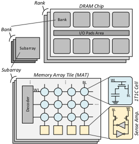
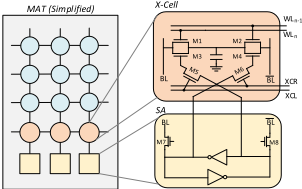
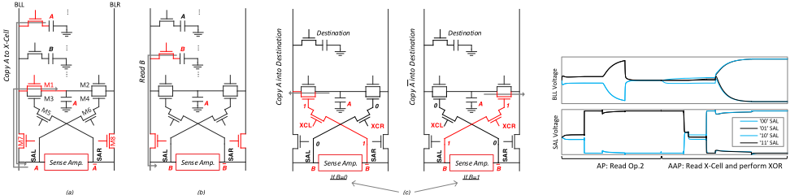
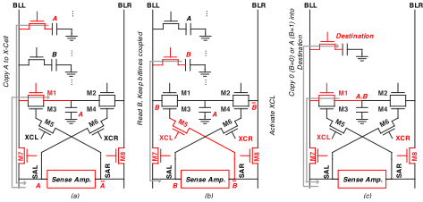
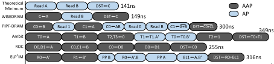
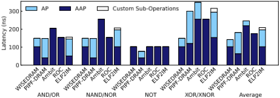
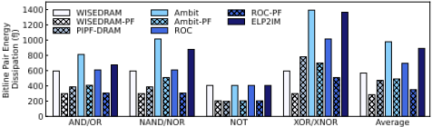
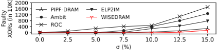

WISEDRAM：一种可靠的按位 In-DRAM 加速器
论文针对现有 In-DRAM 存内计算（PIM）技术——尤其基于多行激活电荷共享的模拟类方案（如 Ambit）——对工艺偏差与噪声敏感、且需修改 sense amplifier 或预充电电路而损害常规读写可靠性的问题。方法上提出 WISEDRAM：在常规 DRAM 阵列中仅增加一行双触点特殊单元 X-Cell，通过 XCL/XCR 控制信号按 SA 上一次读出值选择从左/右 bitline 施加电压扰动，把 XOR 实现为"受控 NOT"，使任意两操作数按位运算在 3 个 DRAM 周期（1 个 AP + 2 个 AAP 原语）内完成，达到理论最小周期数，且不修改 SA、译码器与外围电路。基于 16nm 模型的 HSPICE 仿真显示：XOR 延迟 149ns、仅比理论下限慢 8ns，较 PIPF-DRAM/Ambit/ROC/ELP2IM 平均延迟降低 27%/72%/22%/46%，X(N)OR 提速最高 71%，单 bit XOR 能耗 595fJ，σ=15% 工艺偏差下鲁棒性较最鲁棒的 PIPF-DRAM 再提升 77%，面积开销约 1.6%。该工作属于 DRAM 器件侧的存内计算电路/微架构研究，团队作为 LPDDR/DDR5/HBM4 等内存 IP 提供方无法直接采用其电路改动，但其面向 PPA 的多维评估框架与对 DRAM 内部原语、DDR5 行激活机制的量化分析，可作为团队跟踪 PIM 存储趋势、预研未来内存 IP 架构演进的参考。
现有 In-DRAM PIM 技术面临多重挑战：基于多单元电荷共享的模拟类方法（如 Ambit）对工艺偏差、环境与内部噪声及电荷泄漏高度敏感，且操作数会被破坏、需多份 bulk copy；半数字类方法（ROC、ELP2IM、PIPF-DRAM）虽避免电荷共享，但仍需修改 SA/预充电电路或依赖二极管阈值压降，损害可靠性；同时现有方案按位运算延迟远高于理论下限。此外 DRAM bitline 间距仅约 3F~4F、金属层数少，难以容纳额外 PIM 电路。论文要解决的问题是：在几乎不改动 DRAM 阵列外围（SA、译码器、peripherals）并保持常规单元访问流程的前提下，实现接近理论最小延迟、对工艺偏差鲁棒的批量按位运算。
在 DRAM 阵列中增加一行双触点（dual-contact）特殊单元 X-Cell（每 MAT 增加 4 条额外 wordline，每 bitline 对增加约 4 个 NMOS 控制管），通过 XCL/XCR 信号依据上一次 SA 读出值选择从左/右 bitline 施加电压扰动。以 XOR 为例：先用 RowClone 式 AAP 原语将操作数 A 复制到 X-Cell，再以 AP 原语读操作数 B 使其出现在 SA 节点，最后以 AAP 原语按 B 的值选择将 X-Cell 内容（原值或取反）写回目标单元，即"受控 NOT"，3 个 DRAM 周期完成 X(N)OR；(N)AND/(N)OR、NOT、Copy 同样以 3 个 AP/AAP 原语完成。整个方案不修改 SA 结构、译码器与外围电路，保留常规 DRAM 单元访问流程，并可与 PF-DRAM（省去 precharge）的访问方式叠加以进一步降耗；还可作为 drop-in 替换用于上层 bit-serial 通用计算电路。
XOR 计算延迟 149ns（两个 AAP + 一个 AP 原语），仅比理论绝对下限慢 8ns，为理论最小周期数（3 个 DRAM 周期）
X(N)OR 执行较 PIPF-DRAM、Ambit、ROC、ELP2IM 分别提速 101%、134%、71%、112%；平均按位运算延迟分别降低 27%、72%、22%、46%
单 bit XOR/XNOR 能耗 595 fJ，较 PIPF-DRAM、Ambit、ROC、ELP2IM 节能 31%、134%、70%、129%；结合 PF-DRAM 访问方式后提升至 1.61×、3.65×、2.39×、3.56×
采用 PF-DRAM 后，相对最节能的 PIPF-DRAM，(N)AND/(N)OR 与 XOR/XNOR 能效分别提升 29% 与 161%
Monte Carlo 仿真（HSPICE，10K 轮，16nm 模型，σ=15%）下，鲁棒性较 ROC、Ambit、ELP2IM、PIPF-DRAM 分别提升 9.7×、6.9×、3.9×、77%；σ 增至 10% 时 WISEDRAM 仍无故障
面积开销约 1.6%（每 bitline 对约 8 个存储单元面积，512 单元 bitline 情况）
与 Ambit（多行同时激活的电荷共享 majority 函数）、ROC（利用 NMOS 二极管特性）、ELP2IM/PIPF-DRAM（利用 bitline 残余电荷、修改预充电/SA 控制电压）不同，WISEDRAM 仅新增一行双触点 X-Cell 即可完成全部两操作数按位运算：不修改 SA 结构与常规单元访问流程，从而保证读写可靠性与常规 DRAM 等效，同时对工艺偏差更鲁棒（较最鲁棒的 PIPF-DRAM 提升 77%）；延迟上以 3 个 DRAM 周期达到理论最小值，面积开销仅 1.6%，对芯片开发的侵入性显著低于已有方案。
相关度级别：medium
命中能力域：2.1 IP 架构与微架构
理由：论文命中 2.1 域的内存架构与面向 PPA（延迟/能耗/面积/鲁棒性）的架构权衡方法，但其创新位于 DRAM 器件内部的单元阵列与 X-Cell 电路层面，需要 DRAM 制造工艺支持双触点单元与额外控制信号；团队的核心交付物是 LPDDR/DDR5/HBM4/UCIe 等内存/互连 IP（控制器与 PHY 侧 RTL 与验证），不设计 DRAM 单元与 SA，因此不直接命中团队技术栈与代表工程场景。其借鉴价值在于：一是作为 PIM/存内计算这一存储架构趋势的代表性工作，支撑未来支持 PIM 的 DRAM/HBM 产品出现时的 IP 架构预研与需求定义；二是其"延迟分解 + 能耗分解 + Monte Carlo 工艺偏差鲁棒性 + 面积开销"的多维 PPA 评估框架可迁移到团队内部架构方案对比；三是论文对 MAT/SA/bitline 预充电、VPP、DDR5 64Kb 行激活、AP/AAP/RowClone 原语等 DRAM 内部机制的量化描述，可作为控制器/PHY 团队理解 DRAM 器件行为的补充材料。
建议动作：作为方法参考存档
Mohammad Arman Soleimani 1 ，Nezam Rohbani 2,3 ，Adrian Cristal Kestelman 2 ，Osman Unsal 2 ，Hamid Sarbazi-Azad 1,3
1 伊朗谢里夫理工大学计算机工程系
2 西班牙巴塞罗那超级计算中心
3 伊朗基础科学研究所（IPM）
{ arman.soleimani, azad } @sharif.edu
{ nrohbani, osman.unsal, adrian.cristal } @bsc.es
摘要 - 存内计算（Processing-in-Memory，PIM）旨在通过在动态随机存取存储器（DRAM）内部并行地执行简单运算，来解决处理单元与存储子系统之间代价高昂的数据搬运问题。DRAM 技术的大容量、单元访问时较宽的激活尺寸以及其技术的成熟度，使该技术成为 PIM 技术的理想选择。然而，对工艺偏差和噪声的敏感性、单元的内部漏电以及单元访问的高延迟，限制了 DRAM 内计算在实际应用中的使用。本文提出了一种快速的 PIM 技术，称为 WISEDRAM，它利用一行被称为 X-cells 的特殊单元来实现 DRAM 内的批量按位运算。与以往的方法不同，WISEDRAM 保留了传统的 DRAM 单元访问流程，从而确保读操作和写操作的单元访问可靠性达到与传统 DRAM 相当的水平。与最先进方案相比，WISEDRAM 的平均按位计算延迟降低了 22%，XOR 运算的执行速度提升了 71%，同时仅引入 1.6% 的面积开销。
关键词 - DRAM、存内计算、按位运算、存储墙
在存储器与 CPU 或 GPU 等处理单元之间传输数据需要消耗大量能量，且延迟很高 [12], [22]。此外，由于数据通路宽度有限（例如 DDR5 中为 64 位），存储器访问只能串行进行，这进一步加剧了存储器访问延迟。这一问题造成了性能瓶颈，其严重程度之高，以至于被称为“存储墙”（memory wall）。神经网络处理和图处理等存储器密集型应用尤其容易受到存储墙效应的影响，而不可预测的存储器访问会降低缓存层次结构的有效性，使问题进一步恶化 [6], [23]。
为了减少存储器子系统与处理核心之间的数据传输量，研究者们提出了多种技术，包括近存储器处理（Near Memory Processing, NMP）和存内计算（Processing In Memory, PIM）[21], [24]。
在 NMP 中，处理逻辑（如小型处理单元）被放置在存储器附近。这缩短了两个部件之间的延迟，缓解了存储墙问题，但并未将其完全消除。由于处理逻辑与存储器之间仍存在数据搬运，该问题在本质上依然存在。此外，NMP 方案无法充分利用存储阵列中存在的并行性，与直接在存储阵列上进行处理相比，其吞吐量潜力较低 [24]。
另一方面，PIM 则是在存储阵列内部实现处理，并在存储器内部对所存储的数据执行运算。这可以通过在存储器的每一列上添加逻辑电路来实现，也可以通过利用模拟特性和现有的存储元件来实现。与 NMP 不同，PIM 能够充分挖掘存储阵列内部可用的大量并行性，并彻底消除存储墙，因为处理器与存储器之间不存在数据搬运。
针对不同类型的存储器技术，已有多种 PIM 技术被提出，包括非易失性存储器（Non-Volatile Memories, NVM）[26]、阻变存储器（ReRAM）[4]、静态随机存取存储器（SRAM）[2] 以及 DRAM [28]。1 晶体管-1 电容器 DRAM（1T1C-DRAM）结构因其高容量与大规模的内部并行性、技术的成熟性，以及主存与处理器之间代价高昂的片外数据搬运，在 PIM 领域受到了极大关注。存储墙通常出现在 DRAM 与处理器之间，这是因为与片外 DRAM 相比，片上缓存的延迟要低得多，而且绝大多数计算机系统都依赖 DRAM 作为主存。
然而，在传统 DRAM 器件中实际实现存内计算（Processing-in-Memory, PIM）面临着独特的挑战。1T1C DRAM 阵列具有高度紧凑的结构，其位线间距约为 3 F 至 4 F（F = 特征尺寸）[14]，这使得容纳额外的 PIM 相关电路或修改变得极其困难，因为这些电路和修改必须与 DRAM 制造工艺相兼容。这带来了重大挑战，因为与实现处理逻辑的典型 CMOS 芯片相比，DRAM 芯片制造时使用的金属层数更少 [14], [32]。因此，将逻辑集成到 DRAM 芯片中通常既复杂又充满挑战。
本工作提出了 WISEDRAM，一种新颖的 DRAM 内处理技术，旨在超越现有最先进水平。所提出的方法在 DRAM 阵列中增加了一行特殊的双接触存储单元，称为 X-cell。这一行单元能够在三个 DRAM 周期内执行任意双操作数按位运算，这是理论上可能的最少周期数——两次操作数读取和一次结果写入——并且比当前方法显著更快。
WISEDRAM 快速且稳健的计算被证明在鲁棒性方面大大优于现有最先进技术，而我们的仿真表明，鲁棒性正是现有最先进技术存在的一个突出问题。通过一行专用单元来实现计算的方法意味着存储器结构的其他部分，例如译码器、外围电路和放大器，均无需修改。因此，WISEDRAM 对芯片开发的影响较小，侵入性更低。
为了论证 WISEDRAM 的设计和 X-Cell 的合理性，我们与四种最先进的 PIM 技术进行了定性和定量比较，即 Ambit [31]、ROC [33]、ELP2IM [34] 和 PIPF-DRAM [28]，我们的技术在性能方面优于这些技术，尤其是在执行 X(N)OR 运算时，速度提升高达 71%。平均而言，WISEDRAM 比文献中执行批量按位运算的最快技术快 22%。WISEDRAM 在三个 DRAM 周期内计算任意双操作数按位运算，这是可能的最少周期数。此外，WISEDRAM 对工艺偏差更具鲁棒性，与文献中最鲁棒的 DRAM 内处理技术相比，鲁棒性提升了 77%。所提出的技术仅引入 1.6% 的面积开销，几乎可以忽略不计。
© 2025 IEEE。允许对本材料进行个人使用。对于所有其他用途，包括为广告或宣传目的转载/重发本材料、创作新的汇编作品、用于转售或向服务器或列表分发，或在其他作品中复用本作品的任何受版权保护的组件，无论在当前或未来的任何媒体上，均须获得 IEEE 的许可。https://dx.doi.org/10.1109/DAC63849.2025.11133397

如图 1 所示，差分灵敏放大器（SA）的结构通常由具有强正反馈的交叉耦合反相器构成，从而实现电压比较。电压较高的输入/输出端会被迅速拉至 VDD，而另一端则被拉至 GND。在预充电阶段，SA 的电源与 VDD 和 GND 电源轨之间的连接被门控断开，使得 SA 的内部节点与位线一同被预充电至 VDD/2。
为防止在利用 NMOS 访问晶体管将位单元电容充电至 VDD 或从 VDD 放电时发生电压降，字线的控制电压应设置为高于 VDD + VTh，其中 VTh 表示 NMOS 访问晶体管的阈值电压。这一较高的电压电平被称为高电平 VDD（High-Level VDD）或 VDH。在 DDR5 中，该电压由 1.8 V 输入引脚提供，该引脚也称为 VPP [1]。
当单元连接到位线时，由于电荷共享操作，单元中存储的数据/电荷会被破坏。为了恢复单元电荷，在 SA 的稳定阶段，与被访问单元相连的相应位线会被充电/放电至与该单元（访问前）相同的电荷水平 [7], [14]。
一旦 SA 稳定至约 VDD 的 3/4，即可通过激活列选择线（Column Select Line）来访问数据 [7], [27]。数据以差分方式传输至全局灵敏放大器，以提高数据传输的速度和可靠性，随后数据便可在输出端获得。
另一项工作 [33] 利用二极管的特性来实现逻辑运算。在该技术中，使用了两个额外的 DRAM 行，每一列中的单元通过一个二极管连接在一起，以执行 OR 和 AND 运算。这种方法比以往的技术更快，但存储运算结果的单元中的电荷会因二极管上的阈值电压降而退化，这显著降低了其可靠性。半数字存内计算（PIM）相对于模拟 PIM 的优势之一是避免了单元之间容易出错的电荷共享。然而，正如本研究所示，这些方法仍然会严重损害可靠性。此外，为了实现所需的功能，它们需要对 DRAM 结构进行更多的修改。
与本文最相关的先前方法包括 Ambit [31]、ROC [33]、ELP2IM [34]、PIPF-DRAM [28] 和 Lacc [8]。
Ambit 通过同时连接多个包含操作数的单元来在它们之间进行电荷共享，并利用位线上最终形成的电压（V S）来执行多数函数（majority function）。随后，该多数函数被用于执行更复杂的按位运算。在 Ambit 中，考虑了额外的 DRAM 单元行并将其同时激活，在运算开始之前，操作数会被复制到这些行中。
ROC 的关键思想是利用栅极与其源极相连的 NMOS 晶体管所表现出的类二极管行为，从而允许对单元充电，同时阻止反方向的放电。该技术采用 NOT、AND 和 OR 等基本按位运算来执行诸如 XOR 之类的更复杂运算。
另一方面，ELP2IM 和 PIPF-DRAM 则利用上一次单元访问后位线上残留的电荷来执行按位运算。PIPF-DRAM 基于一种称为 PF-DRAM [27] 的特殊 DRAM 结构，该结构消除了预充电阶段，并通过修改控制信号来实现按位运算。Lacc [8] 是另一种旨在加速 CNN 的 DRAM 内处理技术，它同样可以执行 X(N)OR 运算。然而，由于其按位计算能力仅限于 X(N)OR，该技术未被纳入我们的评估。

在本节中，我们介绍所提出的存内处理技术，称为 WISEDRAM（一种可靠的 DRAM 内按位加速器）。随后，我们讨论 WISEDRAM 能够执行的各种按位运算。
如图 2 所示，WISEDRAM 将一行称为 X-Cell 的特殊单元集成到传统 DRAM 中，用于执行按位运算。X-Cell 类似于双接触单元（dual-contact cell）[18], [31]，并额外增加了四个晶体管（M3 至 M6），使其能够基于上一次灵敏放大器（SA）读取的结果，从任一条位线进行访问。
通过激活 XCL（X-Cell 左连接）和 XCR（X-Cell 右连接）控制信号，X-Cell 会依据上一次单元访问时 SA 上保留的先前值是 '0' 还是 '1'，相应地在左位线或右位线上引起电压扰动。这一能力可被用于执行按位运算。为清晰起见，所给出的示例均聚焦于连接到 BLL（左位线）上的操作数，但值得注意的是，得益于 X-Cell 的双接触特性，操作数可以位于任意 MAT 单元上。
WISEDRAM 保留了与传统 DRAM 相同的结构和存储单元访问操作。需要注意的是，与第 IV 节中讨论的许多先前提出的技术不同，SA 结构并未被修改。在传统 DRAM 中，解耦晶体管（M7 和 M8）由 DCL（位线解耦器）信号控制，以改善存储器访问延迟，并实现相邻 MAT 之间的 SA 共享。在 DDR5 架构中，每次单元访问期间对一行 64 Kb 的激活，使得借助 WISEDRAM 能够对 64 Kb 进行并行操作。该技术利用 DRAM 巨大的内部带宽，实现对按位运算的显著加速。
Due to the significance of X(N)OR as a major bitwise operation, WISEDRAM structure has been optimized for efficient X(N)OR operations. The rationale behind WISEDRAM's design is based on the XOR operation between two operands, A and B ( A ⊕ B ).
In order to compute A ⊕ B serially, the value of one operand (here B ) is observed. If B = 0 , it can be seen that A ⊕ B = A . Otherwise, A ⊕ B = A . This view of XOR as a 'controlled NOT' is the fundamental operation of WISEDRAM.
The computation steps for XOR in WISEDRAM are illustrated in Figure 3, and Figure 4 shows the respective waveforms, extracted from simulations explained in Section IV.

To begin, one of the operands (in this case, A ) is copied to the X-Cell using a row copy as introduced in RowClone [30]. This is achieved through an overlapped Activate-Activate-Precharge (AAP) primitive [31], which can be observed in Figure 3 (a). The X-Cell is a dual-contact cell that features access transistors connected to either bitlines in each pair. With this structure, operands can be stored on any cell in the memory array.
In the second step, as shown in Figure 3 (b), the second operand ( B ) is read, causing its value to appear on the SA nodes. The left SA node, SAL, stabilizes at the value of B , while the right node, SAR, takes on the complement value ( B ). Once B has been restored, the bitlines are precharged and equalized to VDD/2 , the same as conventional DRAM cell access. This step is an Activate-Precharge (AP) primitive.
In the final step of X(N)OR operation, the control signals XCR and XCL activate M5 and M6 , as shown in Figure 3 (c). If B = 0 , the voltage on SAR activates M3 , while M4 remains inactive. In this case, the X-Cell is accessed from the BLL, and the voltage perturbation of A appears on BLL. Alternatively, if B = 1 , the value of SAL activates M4 , and M3 remains inactive. In this case, the X-Cell is accessed from the BLR (Bitline Right), and the voltage perturbation of A appears on BLR. After accessing the X-Cell, the SA is equalized and connected to the bitlines for reading the value, through M7 and M8 . The read value is A if B = 0 , and A if B = 1 . The wordline for the target cell is also activated during this step, and this activation is overlapped [30], making the third step an AAP primitive. This step is similar to a row copy, but instead of activating the source (X-Cell) using a wordline, it is activated using XCR and XCL signals. As a result, the value A ⊕ B is written back to the selected destination operational cell.
The computation of XNOR is similar to XOR. Eq. 1 serves as the basis for XNOR computation in WISEDRAM. Since the X-Cell is dual-contact cell, instead of copying A in the first step (see Figure 3 (a)), A can be copied in X-Cell. By continuing the steps as outlined in Figure 3, the resulting value stored in the destination cell will be A ⊕ B , which corresponds to the XNOR of A and B .
执行 X(N)OR 运算的流程表明，该运算可以在三个 DRAM AP/AAP 原语（一个 AP 和两个 AAP）中执行。这几乎与所需运算次数的理论最优值（三个 AP 原语）一样快，因为对两个操作数和一个目标位置的访问是不可避免的。

行复制功能在传统 DRAM 结构中即已存在，此前已有诸如 [30] 等文献对其进行了研究。该操作被用于多种计算，如前述小节以及其他研究工作 [28]、[31]、[33] 所示。
由于 X-Cell 天然具有双接触（dual-contact）特性，它还可以在复制操作过程中对操作数取反，从而以类似于 [31] 中所述方法的方式执行 NOT 操作。
先前的工作已经论证了在 DRAM 阵列中实现更高级操作的必要性 [3]、[13]。由于 DRAM 位线彼此天然隔离，这些技术采用位串行（bitserial）操作，即将操作数垂直存储在一条位线中。通过这种方式，按位存内计算方法将能够计算诸如加法和乘法等更高级的操作。本工作可作为 [3]、[13] 中所用电路的直接替代（drop-in replacement）；因此，可以采用相同的方法在 WISEDRAM 上执行非按位计算，并且电路级的改进将传递到上层。
在本节中，我们将 WISEDRAM 与最先进的存内（in-DRAM）处理技术进行了对比分析，包括 Ambit [31]、ROC [33]、ELP2IM [34] 和 PIPF-DRAM [28]。
为了对功能、性能、鲁棒性和能耗进行电路级评估，我们在 HSPICE 中采用 16 nm 多栅极工艺模型，并在相同的评估条件下进行。仿真参数汇总于表 I。
为了将按位运算的延迟与其他最先进技术进行比较，我们实现了 PIPFDRAM、Ambit、ROC 和 ELP2IM，并采用了其各自工作中提出的所有用于改善延迟的优化，表 I：电路级仿真参数。
| Technology | 16nm PTM-MG |
|---|---|
| VDD/VPP | 1.1V/1.8V [1] |
| MAT size | 512 × 512 cell |
| C Cell /C BL | 24 fF/144 fF [7], [27] |
| Transistors W/L | SA 10/1, decoupling 2/1, access 1/1, precharge 2/1 [11], M1-M4 1/1, M5-M6 2/1 (Figure 2) |
| Process Variation | Gaussian distribution: σ = 2.5%, 5%, 7.5%, 10%, 12.5%, and 15% m = nominal value for V th , capacitances, and resistances |
| Technology | 16nm PTM-MG |


然后将它们的延迟与 WISEDRAM 的延迟进行了比较。图 6 展示了这些存内处理（PIM）技术中执行 XOR 的子操作分解，以及在结果可存储于任意行的 PIM 技术中理论上可达到的最小延迟。由于访问两个操作数是不可避免的，且两者都必须被恢复并保持，因此需要两个独立的 AP 原语，此外还需要另一个 AP 原语来将结果存储在任意位置，这使得一次完整的 XOR 计算总共需要三次 AP 操作。WISEDRAM 最接近这一最小值，其计算一次 XOR 需要两个 AAP 原语和一个 AP 原语，耗时 149ns，仅比绝对最小值慢 8ns。
图 7 比较了所有按位运算的延迟。如图所示，在执行 X(N)OR 时，WISEDRAM 分别比 PIPF-DRAM、Ambit、ROC 和 ELP2IM 快 101%、134%、71% 和 112%。AAP 操作执行行间的复制操作，而 AP 操作执行单元访问。ELP2IM 使用了一些除激活和预充电之外的自定义子操作，来控制其特殊的灵敏放大器结构，以不平衡的方式对位线进行预充电，这为执行按位运算增加了额外的延迟。平均而言，WISEDRAM 在执行按位运算时表现出比 PIPF-DRAM、Ambit、ROC 和 ELP2IM 更低的延迟，分别降低了 27%、72%、22% 和 46%。
在存储器结构内执行操作时，能耗的主要来源是高寄生电容位线的充放电 [28]。如图 1 所示，这种能量耗散发生在灵敏放大器的上拉晶体管和位线预充电电路中。另一个显著的耗能操作是字线的激活，其会导致本地地址译码器和驱动器内部的能量耗散。WISEDRAM 和 ROC 在存内计算（PIM）操作期间能够采用与 PF-DRAM 结构相同的技术来执行存储单元访问，这一点与 PIPF-DRAM 类似。PF-DRAM 结构从单元访问过程中去除了位线预充电步骤，从而显著降低了单元访问期间的能耗和延迟。为了进行公平评估，我们在传统结构和 PF-DRAM 结构上对 WISEDRAM 和 ROC 进行了评估。


在传统 DRAM 中，AP 和 AAP 操作分别消耗 189 fJ 和 203 fJ。然而，在 PF-DRAM 结构中，它们的能耗分别降至 95 fJ 和 102 fJ。图 8 展示了采用不同存内技术在单条位线上执行按位运算所耗散的能量。在 WISEDRAM 中，对单个比特执行 XOR 和 XNOR 操作消耗 595 fJ，使其比 PIPFDRAM、Ambit、ROC 和 ELP2IM 分别节能 31%、134%、70% 和 129%。此外，通过在 WISEDRAM 中采用 PF-DRAM 存储器访问流程，这些数值大幅提升至 1.61×、3.65×、2.39× 和 3.56×。
配备 PF-DRAM 单元访问技术的 WISEDRAM，在执行 (N)AND/(N)OR 和 XOR/XNOR 操作时，相比 PIPF-DRAM（即此前评估的方法中能效最高的 PIM 技术）分别获得了 29% 和 161% 的能效提升。平均而言，WISEDRAM (PF) 比 WISEDRAM、PIPFDRAM、Ambit、Ambit (PF)、ROC、ROC (PF) 和 ELP2IM 分别节能 99%、65%、388%、72%、144%、22% 和 212%，这表明其具有卓越的能效。
存内处理技术要想达到可接受的良率，就必须对工艺变化具有鲁棒性。为评估这一点，我们使用 HSPICE 进行了蒙特卡洛仿真，共进行了 10 K 轮仿真。在每轮仿真中，工作中的 DRAM 单元和灵敏放大器晶体管的阈值电压，以及位线的寄生电容和寄生电阻，均按高斯分布随机更新。该分布模型的标准差（σ）被设定为每个参数均值（m）的 2.5% 至 15%。
图 9 展示了基于 DRAM 架构的各类存内处理（PIM）技术的故障率随参数变化标准差的变化情况。在所评估的最先进技术中，ROC 对工艺变化表现出最高的敏感性。当 σ 从 10% 增大到 15% 时，故障率从每 10K 轮评估 482 个故障急剧攀升至超过 1700 个故障。ROC 的这种易感性归因于晶体管阈值电压在二极管上造成的电压降，而该二极管正是 ROC 用于计算的关键元件。
对工艺变化最为易感的另外两种 PIM 技术是 Ambit 和 ELP2IM。蒙特卡洛仿真表明，当 σ 增大到 5% 时，这两种技术均未出现故障。然而，当 σ 增大到 15% 时，二者的故障率分别上升至 12.8% 和 7.84%。
另一方面，PIPF-DRAM 则是文献中最鲁棒的最先进技术，在 σ =15% 时，其 10 K 轮仿真中的故障率仅为 284 个故障。这种鲁棒性归因于该技术在子操作期间维持扰动信号的能力。然而，PIPF-DRAM 采用精确不平衡的灵敏放大器来执行其操作，因而容易受到工艺变化的影响。即使将 σ 增大到 10%，WISEDRAM 仍然无故障。与 ROC、Ambit、ELP2IM 和 PIPF-DRAM 相比，在 σ =15% 时，WISEDRAM 的 PIM 技术对工艺变化的鲁棒性分别高出 9.7 倍、6.9 倍、3.9 倍和 77%。WISEDRAM 对工艺变化的鲁棒性可归因于三个主要因素。第一，WISEDRAM 执行一个操作所用的子操作数量更少，从而降低了对工艺变化相关故障的总体敏感性。第二，WISEDRAM 采用与传统 DRAM 相同的单元访问流程，因而更不易受工艺变化影响。最后，传统 DRAM 会在灵敏放大器中使用更高的电压 [20] 以降低延迟。这缓解了 X-cell 晶体管中由阈值引起的电压降，而正是这种电压降在 ROC 中造成了许多错误。
WISEDRAM 的面积开销仅限于每个 MAT 额外增加四条字线以控制 X-Cell 操作，外加每个位线对一个双接触单元和四个额外的 NMOS 晶体管。如 [31] 所示，一个双接触单元大约占用两个存储单元的面积。其余控制晶体管 M3 至 M4 可以采用该工艺下的最小尺寸制造，与单元访问晶体管相同，而 M5 和 M6 则略大一些。X-Cell 可以放置在灵敏放大器附近以简化版图设计，因为折叠位线灵敏放大器的宽度为四条位线 [16], [32]。每个 X-Cell 的总面积开销约为每位线对 8 个存储单元。在一条包含 512 个单元的位线中，这带来的面积开销约为 1.6%。
鉴于动态随机存取存储器（DRAM）的成熟度、容量以及庞大的内部带宽，它是作为存内计算（PIM）平台的绝佳候选。我们提出了一种名为 WISEDRAM 的新型 PIM 技术，它能够执行一系列运算，包括 X(N)OR、(N)AND、(N)OR、NOT 和 Copy。WISEDRAM 还能够执行数量不受限制的按位运算，从而带来更高的能效和更低的延迟。与现有 PIM 技术相比，WISEDRAM 执行 X(N)OR 运算（最复杂的 PIM 运算之一）的速度快 71%。此外，与鲁棒性最强的 PIM 技术相比，WISEDRAM 对工艺偏差的鲁棒性提高了 77%，而其面积开销仅约 1.6%，几乎可以忽略不计。
1 条证据未在原文中核对到